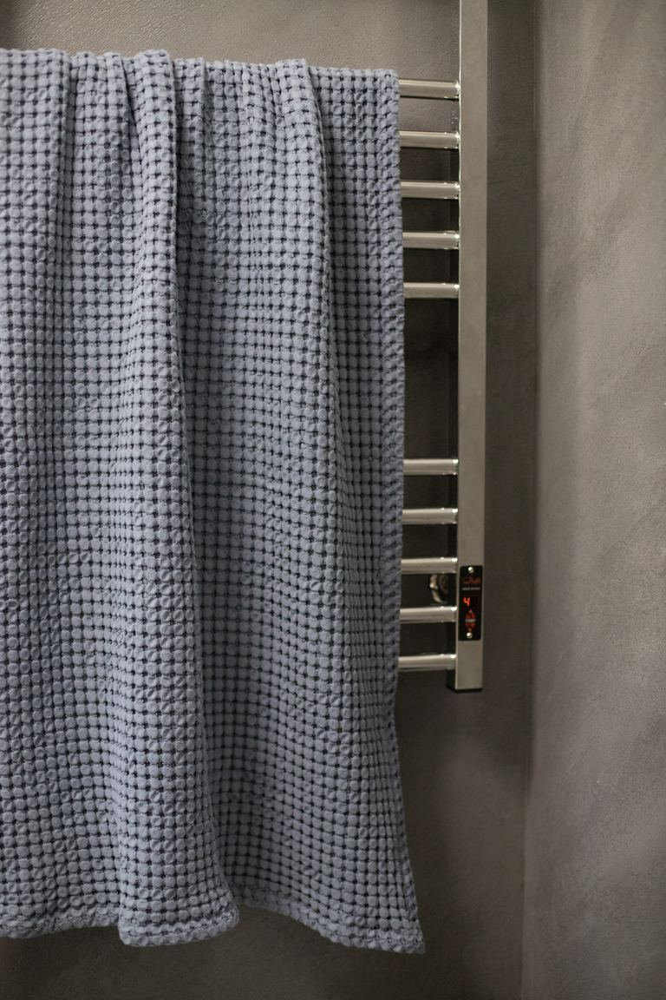
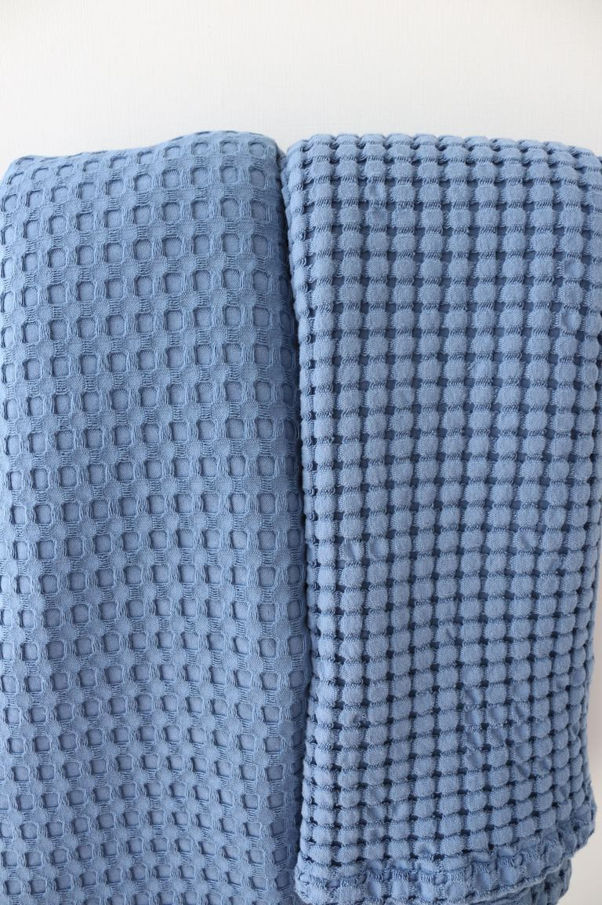
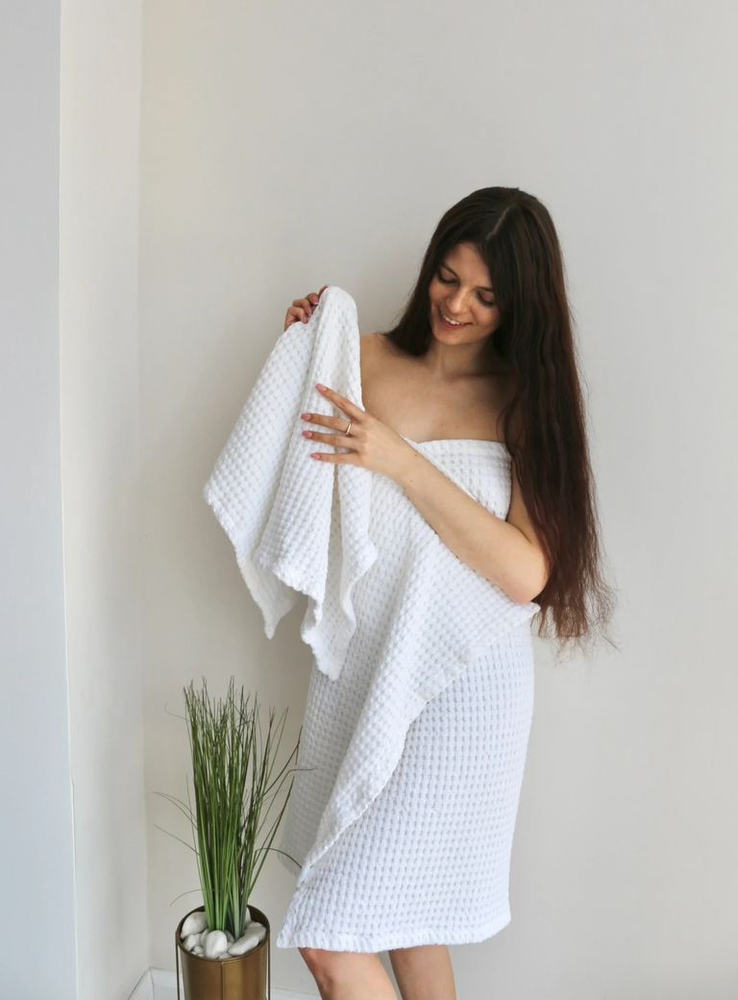

100% турецька бавовнаТканина з Туреччини · пошито в Україні
Рушники, які швидко сохнуть і не пахнуть сирістю
Вафельне плетіння: сохне швидше, ніж махровий рушник, не линяє, а після першого прання розпушується і стає ще м’якшим.
- 100%турецька бавовна
- 340 г/м²щільність тканини
- 2 шт150×90 і 50×90 см
- Українапошив рушників

Швидко сохне
Вафля — це «стільники», а не петлі
Через це тканина тонша й легша, а повітря проходить крізь неї. Рушник сохне швидше за махровий — менше шансів на запах сирості, навіть у невеликій ванній без сушарки.
Щільніша тканина — міцніша і краще тримає форму.
Подивіться, як рушник вбирає воду

Чому вафля
Переваги, які відчуваєш щодня
- 100% турецька бавовнаТканина з Туреччини, довге волокно: рушник міцний і з часом м’якшає, а не стирається. Пошито в Україні.
- Швидко сохнеЛегка тканина, крізь яку проходить повітря.
- Не линяє і не затягуєтьсяУ вафлі немає петель, за які можна зачепитися.
- Легкий масажний ефектРельєф тканини м’яко масажує шкіру.
- Магія першого пранняВафля розпушується: клітинки стягуються, і рушник стає об’ємнішим та м’якшим. З кожним пранням — тільки краще.
Комплектація
Два рушники — ідеальна пара
рушники в кожному комплекті
Різні розміри для різних справ: один — щоб повністю обгорнутися після душу, інший — для обличчя та рук.
Великий формат, який дарує повне огортання та комфорт.
Компактний і зручний, ідеальний для щоденного догляду.
Вибір кольору
Оберіть свій колір
Один комплект = 2 рушники. Можна взяти кілька кольорів.

Білий

Капучино

Теракот

Жовтий

Чорний

Лаванда

Бузок

Ментол

Лимонний
Ваше замовлення
У ванній, у спа-ритуалі, щодня



Відгуки
Відгуки клієнтів
Більше 5 000 комплектів за 3 роки. Багато хто повертається по нові кольори.
Відгуки з особистих повідомлень покупців, імена приховано.

Доставка та оплата
Просто й без ризику
Акуратно пакуємо кожен комплект.
Або на картку — як зручніше.
Не підійшов колір — обміняємо.
Часті запитання
Чи будуть рушники пухнастими, як махрові?
Це інша, легша тканина. Після першого прання вафля розпушується: клітинки стягуються, і рушник стає об’ємнішим та м’якшим. З кожним пранням — тільки приємніше.
Чи може рушник сісти після прання?
Натуральна вафля може трохи дати усадку. Щоб зберегти розмір, після прання розтягніть рушник руками і висушіть природним способом.
Як доглядати за рушниками?
Прання до 40°, без відбілювачів. Після прання розтягнути, не сушити в сушильній машині. Прасувати в режимі «бавовна».
З чого зроблені рушники?
100% турецька бавовна: тканина з Туреччини, пошив в Україні. Щільність — 340 г/м².
Які розміри в комплекті?
Два рушники: 150×90 см (для тіла) і 50×90 см (для обличчя).
Чи можна обміняти або повернути?
Так, обмін протягом 14 днів.
Як оплатити?
Оплата при отриманні або на картку.
Два рушники в комплекті — 950 грн
100% турецька бавовна · Обмін 14 днів · Оплата при отриманні
Обрати колір →